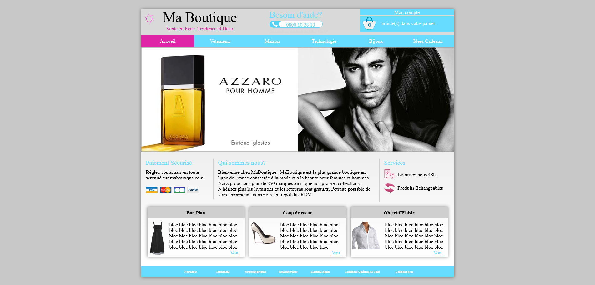
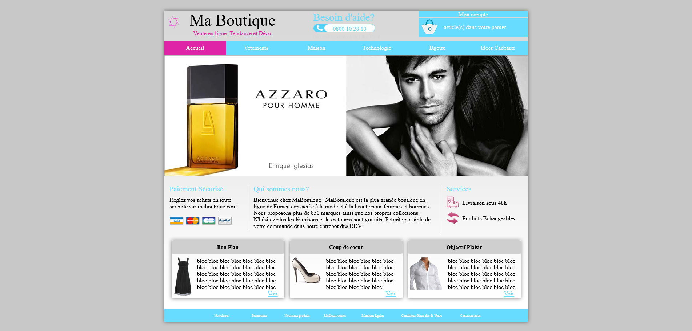

À propos de moi
Développeur web passionné, je conçois et développe des sites et applications web dynamiques, performants et sur mesure. Fort d’une expertise solide en HTML, CSS, JavaScript, PHP et Symfony , je maîtrise aussi bien la partie front-end que back-end, en intégrant des bases de données relationnelles ( SQL/MySQL ) pour une gestion optimisée des données.
Ma priorité : transformer les idées en solutions web fonctionnelles, élégantes et durables. Je porte une attention particulière à la structure du code, à la performance et à l’expérience utilisateur.
Expérience
Développeur Web Junior
Salarié chez Le PôleS – Développement Web & Web mobile
📍 Vitry-sur-seine – Depuis Mai 2025
Actuellement salarié au sein de Le PôleS, j’occupe un poste de développeur web junior, dans un parcours professionnalisant axé sur la conception et le développement de sites web modernes et responsives. Ce cadre me permet de monter en compétences tout en travaillant sur des projets concrets en lien avec les besoins du secteur numérique.
Missions principales :
- Intégration de maquettes responsives en HTML5, CSS3 et JavaScript
- Développement back-end avec PHP et Symfony (architecture MVC)
- Gestion de bases de données SQL / MySQL
- Utilisation de Git pour le versioning et le travail collaboratif
Langage

PROJET
Company Name
J’ai conçu et développé le site web de Company Name, une agence immobilière engagée dans l’accompagnement de ses clients à chaque étape de leur projet. Le site a été pensé pour offrir une expérience utilisateur fluide et professionnelle, avec une interface moderne, responsive et adaptée aux Voir le projet
Voir le projetHTML
CSS
Boutique de sport.com
J’ai conçu et développé Sport.com, un site web moderne dédié à l’univers du sport. L’objectif était de créer une plateforme dynamique, visuellement engageante et accessible sur tous les supports (mobile, tablette, ordinateur).
Voir le projetHTML
CSS
Restaurant le soir
Bienvenue au Soir, un restaurant où la gastronomie rime avec créativité et convivialité. Niché au cœur de la ville, Le Soir vous invite à découvrir une cuisine moderne, inspirée des saveurs du monde, dans une ambiance élégante et décontractée.
Voir le projetHTML
CSS
Restaurant The Fiasco
J’ai conçu et développé le site web du restaurant [Nom du
restaurant The Fiasco], avec pour objectif de valoriser l’image
de l’établissement et de faciliter la
réservation en ligne. Le site offre une expérience utilisateur
fluide et immersive, adaptée à tous les supports (desktop,
mobile, tablette), avec une identité visuelle en accord avec
l’ambiance du restaurant.
HTML
CSS
Restaurant le Bilan
j’ai conçu et développé le site web du restaurant Le Bilan dans le but de refléter l’univers singulier de l’établissement et d’optimiser la prise de réservation en ligne. Le site propose une navigation fluide et intuitive, pensée pour tous les supports (desktop, mobile, tablette), avec une identité visuelle en parfaite harmonie avec l’ambiance élégante et contemporaine du lieu. L’expérience utilisateur a été au cœur de la conception, avec un design épuré, une hiérarchisation claire des contenus, et une mise en valeur des plats et de l’atmosphère du restaurant à travers des visuels immersifs. Résultat : un site moderne, rapide, et entièrement administrable, qui renforce la présence digitale du restaurant tout en facilitant le parcours client.
Voir le projetHTML
CSS
Boutique Azzaro
J’ai réalisé un site vitrine inspiré de l’univers de la marque Azzaro Parfums, avec l’objectif de retranscrire l’élégance, la sensualité et le raffinement propres à cette maison emblématique de la parfumerie de luxe. Le site propose une expérience immersive, à travers un design épuré, des animations légères et une navigation fluide. L’accent a été mis sur la mise en valeur visuelle des produits, à travers des visuels plein écran, des fiches parfum détaillées et une ambiance graphique sobre et sophistiquée.
Voir le projetHTML
CSS
Boutique Nereis bijoux
J’ai conçu et développé le site de la boutique Nereis,
une marque de bijoux qui allie élégance contemporaine et
inspiration marine. Le site a été pensé comme une véritable
vitrine numérique, mettant en valeur chaque pièce à travers un
design épuré, des visuels immersifs et une navigation intuitive.
HTML
CSS
Site Jurassic World
Site Jurassic World J’ai conçu et développé un site
interactif
inspiré de l’univers Jurassic World, pensé comme une expérience
immersive mêlant design cinématographique, animations, et
contenu interactif. L’objectif était de plonger l’utilisateur
dans l’ambiance du parc, comme s’il y était.
HTML
CSS


 
